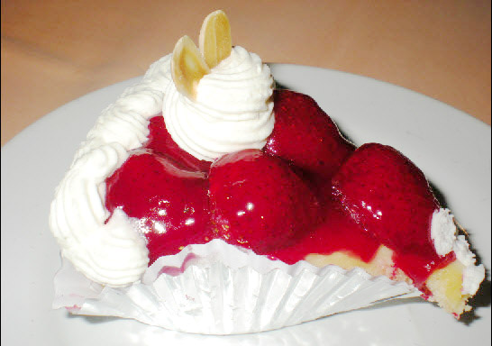

|  | เมนู | Strawberry Cheese Pie |
| ส่วนประกอบ |
1. ถาดฟอยล์ 2. ครีมชีส Philadaphia 1 ก้อน 3. สตอเบอรี่ Wilderness 1 กระป๋อง 4. นมข้นหวาน 4 ช้อนโต๊ะ 5. แครกเกอร์ 2 ห่อ 6. เนยเค็ม 1/2 ก้อน 7. มะนาว 1 ลูก |
|
| ขั้นตอน |
1. บดแครกเกอร์ให้ละเอียด 2. ตั้งไฟอ่อนๆ เพื่อละลายเนย จากนั้นเทเนยใส่แครกเกอร์ที่บดละเอียด ผสมให้เข้ากันจนกระทั่งแครกเกอร์จับตัวกัน 3. นำส่วนผสมที่ได้เทใส่ลงในถาดฟอยล์ อัดให้แน่น จากนั้นนำไปแช่ตู้เย็น 4. ตั้งไฟอ่อนๆ เพื่อละลายครีมชีส ในระหว่างนี้ให้เติมนมข้นหวานเป็นระยะ คนให้เข้ากัน 5. บีบมะนาวลงไปเล็กน้อย เพื่อนำไปตัดความหวานของครีมชีส 6. นำส่วนผสมที่ได้เทใส่ลงไปในแครกเกอร์ที่อัดใส่ถาดฟอยล์ไว้แล้วและนำไปแช่ตู้เย็นประมาณ 2 ชั่วโมง 7. ราดสตอเบอรี่ Wilderness และหั่นสตอเบอรี่สดมาวางตกแต่งให้สวยงาม | |